Projetos Acadêmicos - FATEC
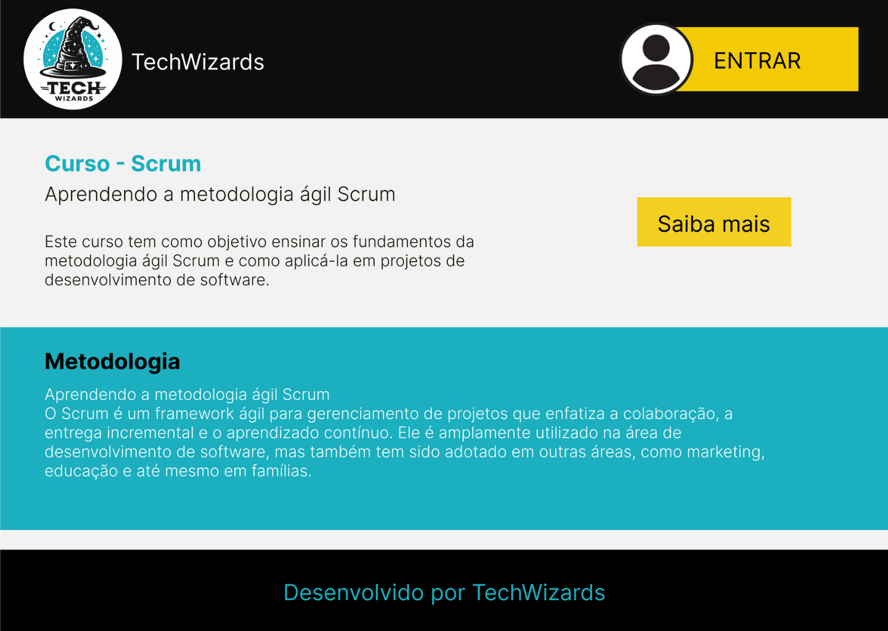
TechWizards: Raquel Massae (eu), Pollyana Roberta, Pamela Freitas, Felipe Corrêa, Bruna Regra, Leandro Barbosa e Maria Eduarda.
Com o intuito de desenvolver uma aplicação Web usando metodologias ágeis a FATEC DE JACAREÍ propôs aos alunos do 1° semestre do curso de Desenvolvimento de Software Multiplataforma (DSM), o desenvolvimento de um curso online sobre o metodo ágil Scrum, que define-se como um framework de colaboração de equipe ágil comumente usado.
No projeto fui responsável pelo UX/UI, prototipação e estruturação da navegação no Figma, além de colaborar com a documentação e apoiar também no desenvolvimento, principalmente no front-end.
Plataforma de Ensino SCRUM - Primeiro Semestre
Desenvolvimento de uma Plataforma Web para Ensino do Método Scrum.
TechWizards: Raquel Massae (eu), Pollyana Roberta, Pamela Freitas, Felipe Corrêa, Bruna Regra, Leandro Barbosa e Maria Eduarda.
Com o intuito de desenvolver uma aplicação Web usando metodologias ágeis a FATEC DE JACAREÍ propôs aos alunos do 1° semestre do curso de Desenvolvimento de Software Multiplataforma (DSM), o desenvolvimento de um curso online sobre o metodo ágil Scrum, que define-se como um framework de colaboração de equipe ágil comumente usado.
No projeto fui responsável pelo UX/UI, prototipação e estruturação da navegação no Figma, além de colaborar com a documentação e apoiar também no desenvolvimento, principalmente no front-end.
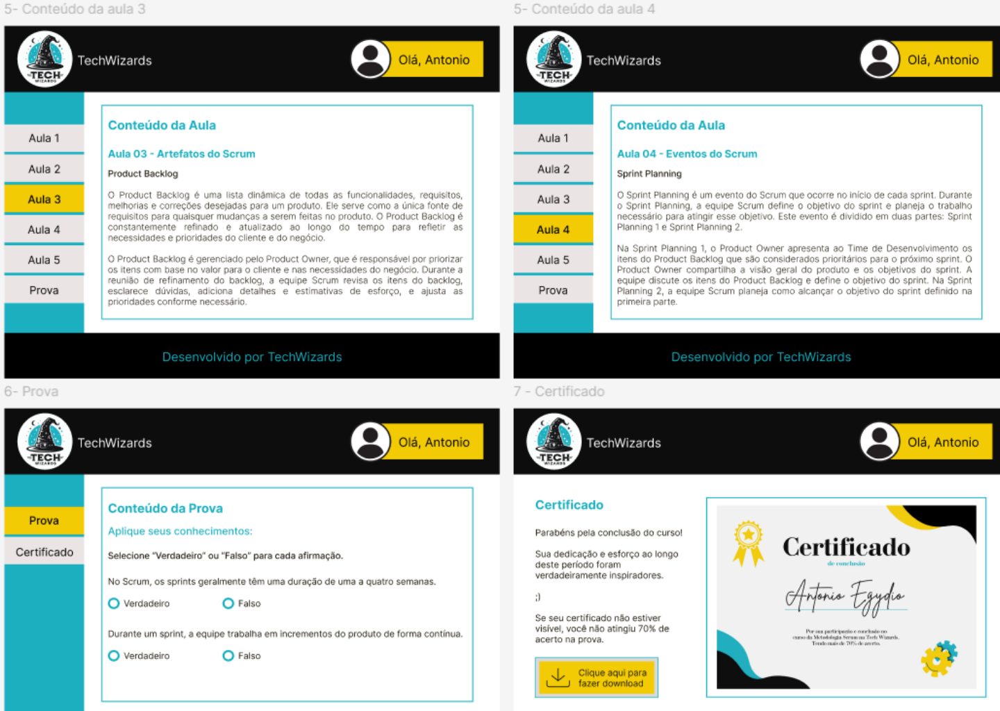
Clique no link para acessar o GitHub: GitHub
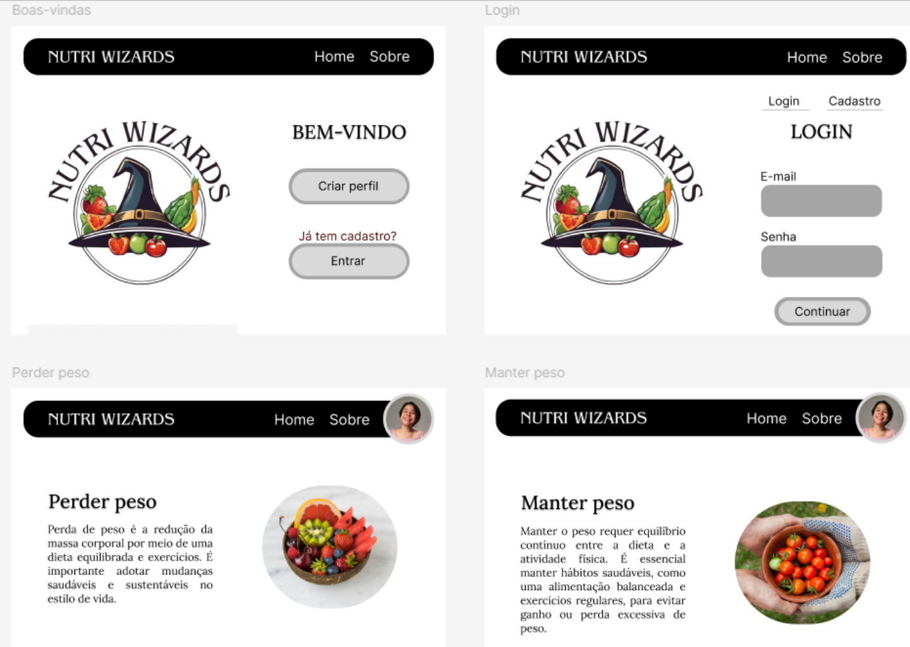
NutriWizards: Raquel Massae (eu), Pollyana Roberta, Pamela Freitas, Felipe Corrêa, Bruna Regra, Leandro Barbosa e Maria Eduarda.
Este projeto visa desenvolver uma aplicação web utilizando metodologias ágeis (Scrum) para calcular calorias e sugerir dietas personalizadas, destinada aos alunos do 2° semestre de DSM da FATEC Jacareí. A plataforma, construída com React, TypeScript, HTML/CSS e PostgreSQL, permitirá aos usuários monitorar sua ingestão calórica e receber recomendações alimentares baseadas em seus objetivos. O design será prototipado no Figma, o versionamento feito via Git/GitHub, e a documentação detalhada no README.md, integrando práticas de desenvolvimento ágil e tecnologias modernas para criar uma solução funcional e educativa.
Atuei na concepção da interface, prototipação e experiência de usuário no Figma, contribuí com parte do front-end e auxiliei na documentação e organização da apresentação da solução.
Contador de Calorias - Segundo Semestre
Desenvolvimento de uma Plataforma Web para Cálculo Nutricional e Recomendação de Dietas Personalizadas.
NutriWizards: Raquel Massae (eu), Pollyana Roberta, Pamela Freitas, Felipe Corrêa, Bruna Regra, Leandro Barbosa e Maria Eduarda.
Este projeto visa desenvolver uma aplicação web utilizando metodologias ágeis (Scrum) para calcular calorias e sugerir dietas personalizadas, destinada aos alunos do 2° semestre de DSM da FATEC Jacareí. A plataforma, construída com React, TypeScript, HTML/CSS e PostgreSQL, permitirá aos usuários monitorar sua ingestão calórica e receber recomendações alimentares baseadas em seus objetivos. O design será prototipado no Figma, o versionamento feito via Git/GitHub, e a documentação detalhada no README.md, integrando práticas de desenvolvimento ágil e tecnologias modernas para criar uma solução funcional e educativa.
Atuei na concepção da interface, prototipação e experiência de usuário no Figma, contribuí com parte do front-end e auxiliei na documentação e organização da apresentação da solução.
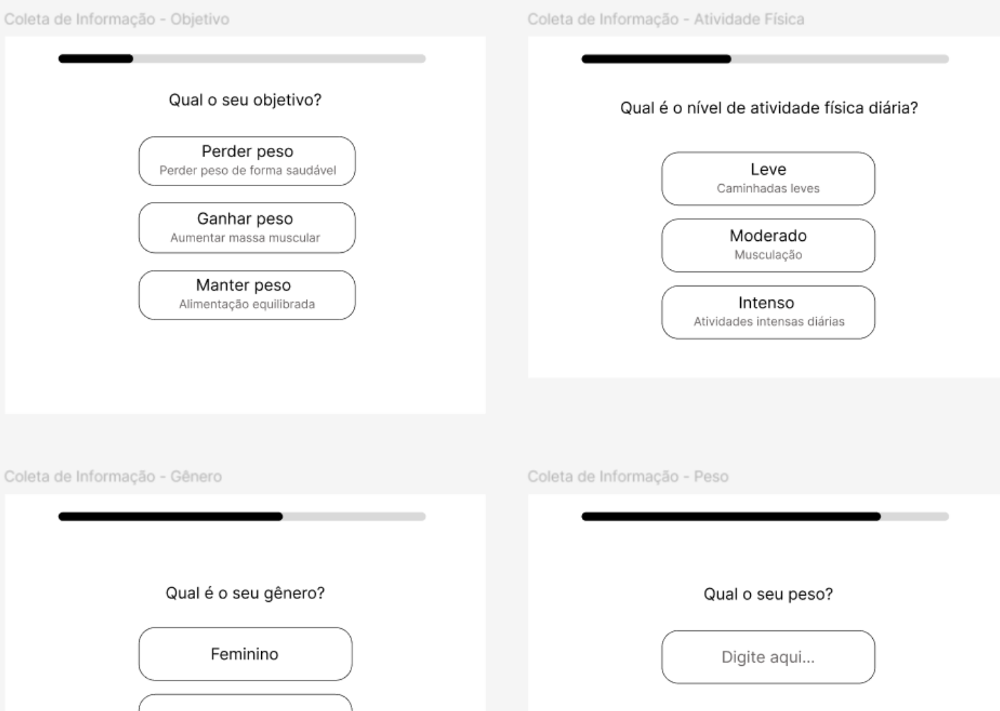
Clique no link para acessar o GitHub: GitHub
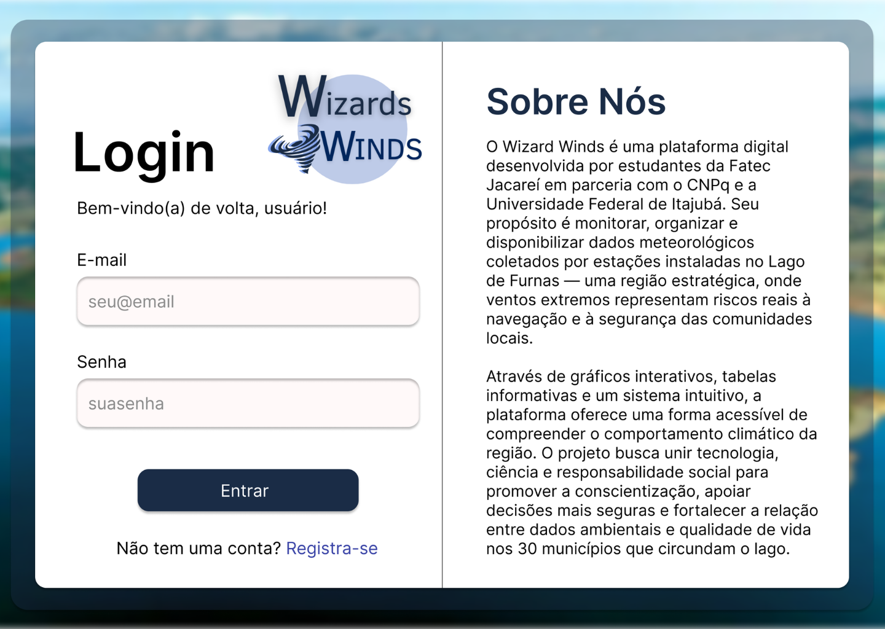
HalfTech: Raquel Massae (eu), Pollyana Roberta e Felipe Corrêa.
Desenvolvido no âmbito da disciplina de Gestão Ágil de Projetos de Software da FATEC Jacareí, este projeto aplica a Aprendizagem Baseada em Projetos (ABP) para criar uma plataforma web que disponibiliza dados meteorológicos das três estações instaladas no Lago de Furnas, região afetada por ventos extremos que comprometem a navegação e causam impactos socioeconômicos. A solução oferecerá visualização gráfica interativa, histórico em tabelas, comparação entre estações, exportação de dados em CSV e emissão de alertas de risco, culminando em uma interface responsiva que democratiza o acesso a informações climáticas críticas para a população local.
Atuei como Product Owner, garantindo alinhamento do produto com os requisitos. Também fui responsável pelo UX/UI, prototipação e fluxos de navegação no Figma, além de apoiar no desenvolvimento e documentação.
Wizard Winds - Terceiro Semestre
Plataforma Web para Monitoramento Meteorológico do Lago de Furnas: Visualização de Dados e Alertas em Tempo Real.
HalfTech: Raquel Massae (eu), Pollyana Roberta e Felipe Corrêa.
Desenvolvido no âmbito da disciplina de Gestão Ágil de Projetos de Software da FATEC Jacareí, este projeto aplica a Aprendizagem Baseada em Projetos (ABP) para criar uma plataforma web que disponibiliza dados meteorológicos das três estações instaladas no Lago de Furnas, região afetada por ventos extremos que comprometem a navegação e causam impactos socioeconômicos. A solução oferecerá visualização gráfica interativa, histórico em tabelas, comparação entre estações, exportação de dados em CSV e emissão de alertas de risco, culminando em uma interface responsiva que democratiza o acesso a informações climáticas críticas para a população local.
Atuei como Product Owner, garantindo alinhamento do produto com os requisitos. Também fui responsável pelo UX/UI, prototipação e fluxos de navegação no Figma, além de apoiar no desenvolvimento e documentação.
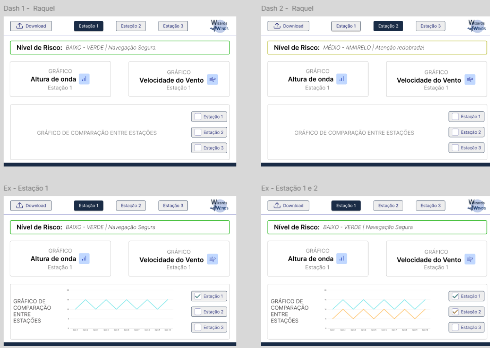
Clique no link para acessar o GitHub: GitHub
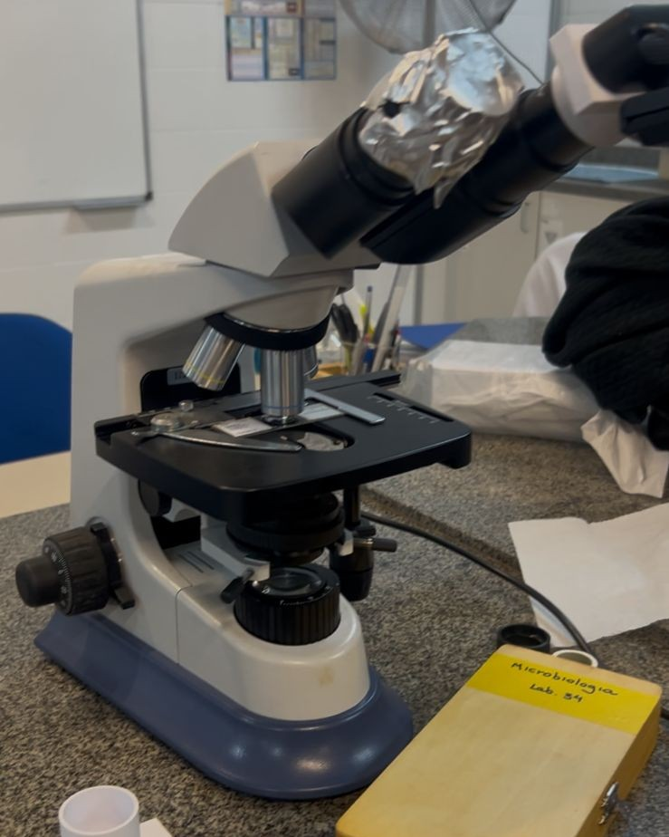
TechWizards: Raquel Massae (eu), Pollyana Roberta, Pamela Freitas, Felipe Corrêa, Bruna Regra, Leandro Barbosa e Maria Eduarda.
O sistema permite coletar imagens e vídeos de microscópios ópticos por meio de uma câmera digital acoplada, transmitir o fluxo de vídeo em tempo real via Wi‑Fi para um servidor em nuvem, e disponibilizar aplicativo mobile e interface web para visualização e armazenamento de snapshots. O projeto atende aos microscópios disponíveis na Fatec Jacareí e visa melhorar a experiência didática dos alunos.
Trabalhei na criação do design da interface e navegação no Figma, contribuindo também com partes do front-end e auxiliando na documentação do projeto.
Imagens de Microscópios Ópticos - Quarto Semestre
Sistema para Coleta de Imagens de Microscópios Ópticos e Visualização Mobile/Web.
TechWizards: Raquel Massae (eu), Pollyana Roberta, Pamela Freitas, Felipe Corrêa, Bruna Regra, Leandro Barbosa e Maria Eduarda.
O sistema permite coletar imagens e vídeos de microscópios ópticos por meio de uma câmera digital acoplada, transmitir o fluxo de vídeo em tempo real via Wi‑Fi para um servidor em nuvem, e disponibilizar aplicativo mobile e interface web para visualização e armazenamento de snapshots. O projeto atende aos microscópios disponíveis na Fatec Jacareí e visa melhorar a experiência didática dos alunos.
Trabalhei na criação do design da interface e navegação no Figma, contribuindo também com partes do front-end e auxiliando na documentação do projeto.
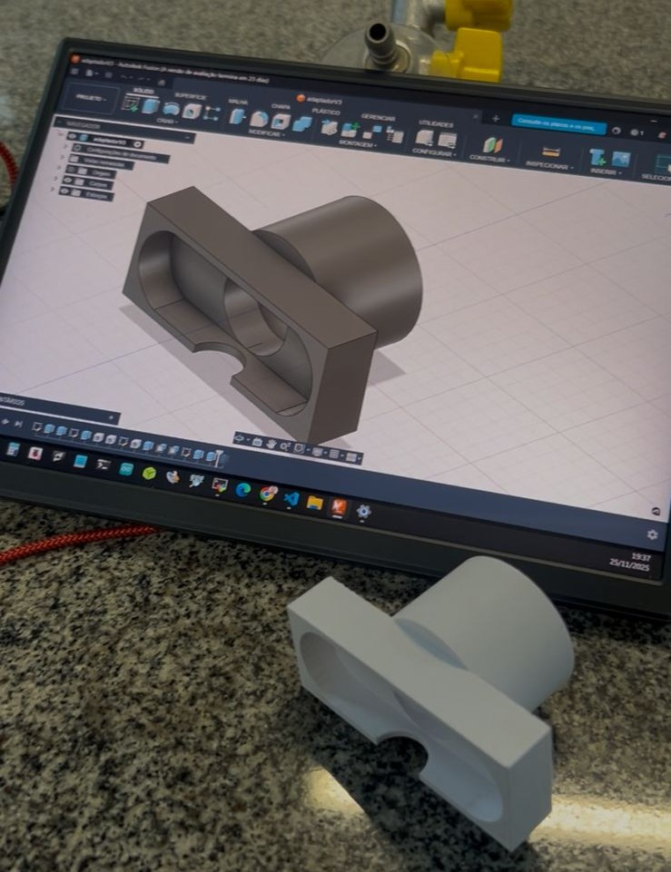
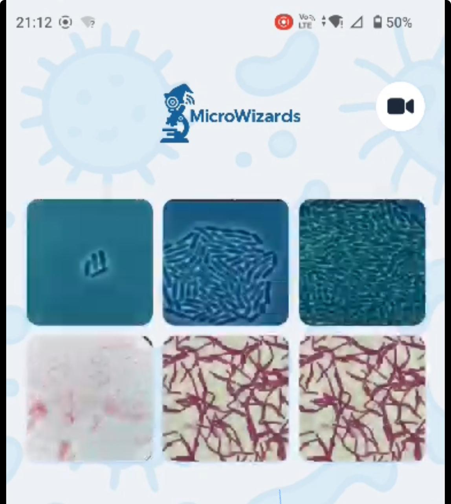
Clique no link para acessar o GitHub: GitHub
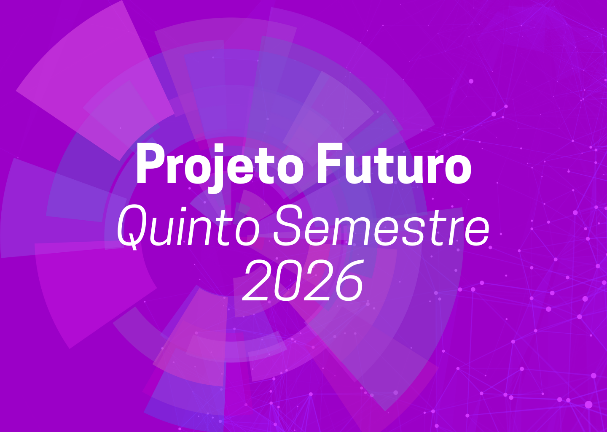
Projeto Futuro - Quinto Semestre
Projeto Futuro - Sexto Semestre
Projetos Acadêmicos - Iniciação Científica
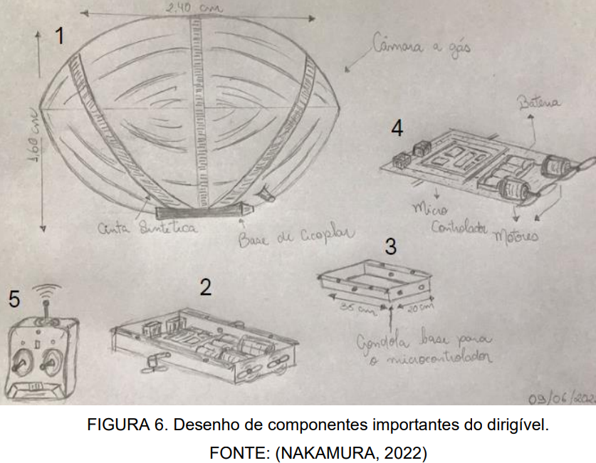
Iniciação Científica, IFSP e IEAV.
Orientador e professor: Ana Paula Abrantes Castro Shiguemori e Elcio Hideiti Shiguemori.
O principal objetivo deste projeto de Iniciação Científica foi apresentar uma proposta para o desenvolvimento de um protótipo de dirigível capaz de operar em ambiente Indoor e carregar diferentes tipos de sensores e atuadores. Os resultados apresentados neste relatório foram divididos em oito módulos para melhor compreensão, são eles: busca bibliográfica, levantamento dos componentes eletrônicos, orçamento, pesquisas individuais de cada componente, testes com o simulador TINKERCAD, construção da câmara a gás, pesquisa de mercado do gás hélio e o desenho da gôndola. Os resultados deste estudo consistem em alcançar o entendimento sobre a funcionalidade de todos os componentes necessários para a montagem do dirigível, através da realização de pesquisas e testes; a estimativa de seus valores no mercado; e a realização da montagem da câmara a gás, o desenho da gôndola, e o levantamento do gás hélio.
Iniciação Científica - Redes Neurais Convolucionais na detecção de objetos
Redes Neurais Convolucionais na detecção de objetos com uso de imagens obtidas por Drones.
Iniciação Científica, IFSP e IEAV.
Orientador e professor: Ana Paula Abrantes Castro Shiguemori e Elcio Hideiti Shiguemori.
O principal objetivo deste projeto de Iniciação Científica foi apresentar uma proposta para o desenvolvimento de um protótipo de dirigível capaz de operar em ambiente Indoor e carregar diferentes tipos de sensores e atuadores. Os resultados apresentados neste relatório foram divididos em oito módulos para melhor compreensão, são eles: busca bibliográfica, levantamento dos componentes eletrônicos, orçamento, pesquisas individuais de cada componente, testes com o simulador TINKERCAD, construção da câmara a gás, pesquisa de mercado do gás hélio e o desenho da gôndola. Os resultados deste estudo consistem em alcançar o entendimento sobre a funcionalidade de todos os componentes necessários para a montagem do dirigível, através da realização de pesquisas e testes; a estimativa de seus valores no mercado; e a realização da montagem da câmara a gás, o desenho da gôndola, e o levantamento do gás hélio.
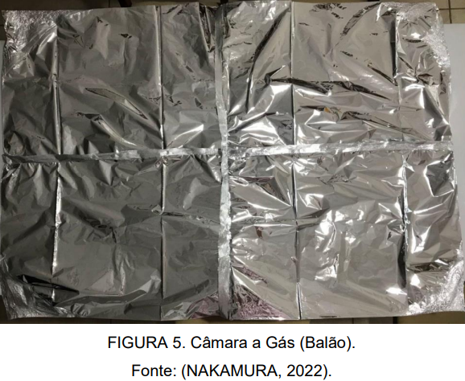
Clique no link para abrir o PDF: Abrir PDF

Iniciação Científica - Estudo de um protótipo de Dirigível
Estudo de um protótipo de dirigível de baixo custo com uso de arduino para emprego em ambientes indoor.
Iniciação Científica pelo CNPq/WASH.
Orientador e professor: Ana Paula Abrantes Castro Shiguemori e Elcio Hideiti Shiguemori.
O objetivo deste projeto de iniciação científica é estudar alternativas para desenvolvimento de um protótipo de dirigível capaz de operar em ambiente Indoor e carregar diferentes tipos de sensores e atuadores. Os resultados apresentados neste relatório foram divididos em quatro módulos para melhor compreensão, são eles: busca bibliográfica, levantamento dos componentes eletrônicos, orçamento e pesquisas individuais de cada componente. Os resultados desse estudo consistem em: entendimento aprofundado sobre a funcionalidade de todos os componentes necessários para a montagem do dirigível, através da realização de pesquisas e testes; e a estimativa de seus valores no mercado.
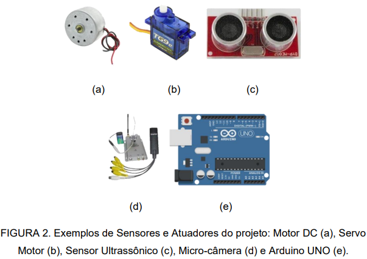
Clique no link para abrir o PDF: Abrir PDF